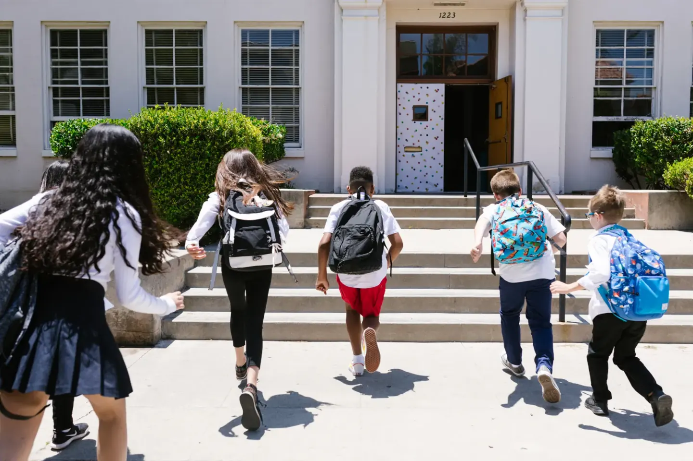

Families
Know the stop, the schedule and what to prepare.
Between home and the school gate, families need a familiar routine and information they can use.

Know the stop, the schedule and what to prepare.
Coordinate arrival, dismissal and the student handoff.
Keep assignments, route information and communication together.

A good transport plan gives each family a clear next step before the journey begins.
Start with the school, your area and the journeys you need.